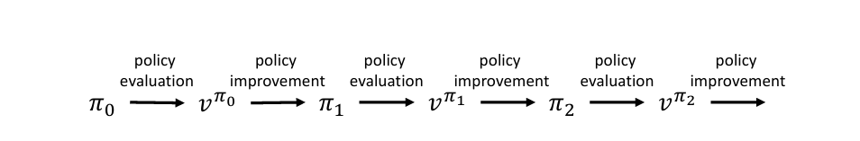

策略迭代和值迭代¶
约 6133 个字 1 张图片 预计阅读时间 20 分钟
Reference¶
- https://people.cs.umass.edu/~bsilva/courses/CMPSCI_687/Fall2022/Lecture_Notes_v1.0_687_F22.pdf
到目前为止，我们已经定义了想要解决的问题，讨论了忽略问题的马尔可夫决策过程（MDP）结构的黑盒优化（BBO）算法，并定义了更复杂的算法将用于利用环境的MDP结构的值函数. 在本节中，我们将展示当转移函数和奖励函数已知时，如何使用值函数有效地求解有限MDP的最优策略. 也就是说，在本节中，我们将介绍标准的规划算法. 我们介绍这些算法是因为后面的强化学习（RL）算法（不需要知道转移概率 \(p\) 和奖励函数 \(R\) ）与这些算法密切相关（它们可以被视为这些规划算法的随机近似）. 我们从如何计算策略的值函数这个问题开始.
1 策略评估¶
在这里，我们考虑这样一个问题：给定一个策略 \(\pi\) ，如何有效地计算 \(v^{\pi}\) ？注意，贝尔曼方程为我们提供了 \(|S|\) 个方程和 \(|S|\) 个未知变量，即 \(v^{\pi}(s_{1}), v^{\pi}(s_{2}), \cdots, v^{\pi}(s_{|S|})\) . 这些方程为：
我们定义：
- 状态值函数向量：\(\mathbf{v}^{\pi}=\begin{bmatrix}v^{\pi}(s_1)\\v^{\pi}(s_2)\\\vdots\\v^{\pi}(s_{|S|})\end{bmatrix}\)
- 奖励向量：对于每个状态 \(s_i\)，\(R_i=\sum_{a \in A}\pi(s_i,a)\sum_{s' \in S}p(s_i,a,s')R(s_i,a)\)，则 \(\mathbf{R}=\begin{bmatrix}R_1\\R_2\\\vdots\\R_{|S|}\end{bmatrix}\)
- 状态转移概率矩阵：矩阵元素 \(P_{ij}=\sum_{a \in A}\pi(s_i,a)p(s_i,a,s_j)\)，表示从状态 \(s_i\) 依据策略 \(\pi\) 转移到状态 \(s_j\) 的概率，\(\mathbf{P}\) 是一个 \(|S|\times|S|\) 的矩阵.
将上述 \(|S|\) 个方程组合起来，就可以写成矩阵 - 向量的形式：
即 \(\mathbf{v}^{\pi}=\mathbf{R}+\gamma\mathbf{P}\mathbf{v}^{\pi}\) 且 \((\mathbf{I}-\gamma \mathbf{P})\mathbf{v}^{\pi}=\mathbf{R}\)
注意，这是一个线性方程组，它有唯一解（因为\((\mathbf{I}-\gamma \mathbf{P})\mathbf{v}^{\pi}\)可逆）. 这个系统可以用 \(O(|S|^{3})\) 次运算求解（一般来说，这个问题至少需要 \(\Omega(|S|^{2})\) 次运算，在2018年秋季，渐近运行时间最优的算法是Coppersmith和Winograd在1987年提出的算法，需要 \(O(n^{2.736})\) 次运算）.
另一种方法是使用动态规划. 虽然不一定更高效，但这种动态规划方法稍后将使我们能够有效地交替进行评估当前策略和改进当前策略的步骤. 在这里，当我们谈到评估一个策略或策略评估时，我们指的是估计与该策略相关的状态值函数或动作值函数. 稍后我们将讨论另一种形式的策略评估，其目标是估计 \(J(\pi)\) ，而不是整个值函数 \(v^{\pi}\) .
令 \(v_{0}, v_{1}, v_{2}, \cdots\) 表示一个函数序列，其中每个 \(v_{i}: S \to \mathbb{R}\) . 注意，有些人喜欢在估计值上加上帽子符号. 在本笔记中，我们将继续用 \(v_{i}\) 表示 \(v^{\pi}\) 的第 \(i\) 个估计值，但在作业中，你可以自由地用 \(\hat{v}_{i}\) （就像我们在课堂上所做的那样）来代替 \(v_{i}\) . 直观地说，这个函数序列表示由一个以增量方式估计 \(v^{\pi}\) 的算法产生的 \(v^{\pi}\) 的估计值序列. 过去，这一点让学生们感到困惑，他们没有意识到 \(v_{i}\) 和 \(v^{\pi}\) 是不同的. 所以，再次强调，注意 \(v_{i}\) 是我们对 \(v^{\pi}\) 的第 \(i\) 个近似值. 它不一定是 \(v^{\pi}\) . 此外，虽然我们通常 “知道” \(v_{i}\) （我们有它的解析形式，或者有代码来计算它），但我们往往并不精确地知道 \(v^{\pi}\) （如果我们知道，就没有必要去近似它了！）.
考虑任意选择 \(v_{0}\) 的情况. 一种改进我们估计的方法是尝试使贝尔曼方程的两边相等. 回想一下，\(v^{\pi}\) 的贝尔曼方程是：
因此，我们可以通过以下更新来尝试使贝尔曼方程的两边相等：
给定 \(v_{i}\) ，对每个状态 \(s\) 应用此更新来计算 \(v_{i + 1}(s)\) ，称为完全备份. 对单个状态 \(s\) 应用此更新来计算 \(v_{i + 1}(s)\) ，称为备份.
为了理解为什么这是一种动态规划方法，假设我们将 \(v_{0}, v_{1}, \cdots\) 存储为一个矩阵，其中 \(v_{0}\) 作为第一列，\(v_{1}\) 作为第二列，依此类推. 这个更新规则从左到右填充这个矩阵，其中每个元素的值取决于前一列中先前计算的值.
从我们对贝尔曼方程的推导中应该清楚，\(v^{\pi}\) 是这个迭代过程的一个不动点（也就是说，如果 \(v_{i} = v^{\pi}\) ，那么 \(v_{i + 1} = v^{\pi}\) ）. 不太明显的是，\(v_{i} \to v^{\pi}\) . 我们不会证明这个性质（这个更新是通向我们稍后介绍的值迭代更新的一个垫脚石，我们将专注于证明值迭代更新的收敛性）.
到目前为止我们所描述的用于策略评估的动态规划算法可以通过存储 \(2|S|\) 个值来实现——在计算出 \(v_{i + 1}\) 之前一直存储 \(v_{i}\) . 当计算出 \(v^{\pi}(s)\) 的新估计值时，将其放入 \(v_{i + 1}(s)\) 中，以免覆盖存储在 \(v_{i}(s)\) 中的值，因为在计算其他状态的下一个值时可能会用到 \(v_{i}(s)\) . 另一种原地实现方法只保留一个表，执行单个状态备份（而不是完全备份），并将更新后的状态值近似直接存储在计算它们的同一个表中. 这种变体也已被证明是收敛的，即使状态以任何顺序更新，或者某些状态比其他状态更新得更频繁（只要每个状态被无限次更新）. 注意，在这些原地变体中，状态更新的顺序很重要. 在网格图世界中，从左下角到右上角更新状态可能会使算法在单次遍历状态空间后就达到其不动点，而从左上角到右下角更新状态则需要多次遍历才能收敛.
2 策略改进¶
一旦我们为某个初始策略 \(\pi\) 估计出了 \(v^{\pi}\) 或 \(q^{\pi}\) ，如何找到一个至少与 \(\pi\) 一样好的新策略呢？注意，如果我们有了 \(v^{\pi}\) ，可以通过方程 \(q^{\pi}(s, a) = \sum_{s' \in S} p(s, a, s') (R(s, a) + \gamma v^{\pi}(s'))\) 轻松计算出任何 \((s, a)\) 的 \(q^{\pi}(s, a)\) . 那么，现在考虑如果我们已经计算出了 \(q^{\pi}\) ，如何找到一个策略 \(\pi'\) ，使其总是至少与 \(\pi\) 一样好.
考虑一种贪心方法，我们将 \(\pi'\) 定义为一个确定性策略，当处于状态 \(s\) 时，它选择使 \(q^{\pi}(s, \cdot)\) 最大化的动作. 也就是说，\(\pi': S \to A\) 是一个确定性策略，定义为：
这个策略是关于 \(q^{\pi}\) 的贪心策略. 它之所以贪心，是因为它只优化眼前的利益，而不考虑长期后果. 回想一下，\(q^{\pi}(s, a)\) 是指如果智能体在状态 \(s\) 采取动作 \(a\) ，然后遵循策略 \(\pi\) 之后的期望折扣回报. 所以，当 \(\pi'\) 选择使 \(q^{\pi}(s, a)\) 最大化的动作 \(a\) 时，并不一定是在选择使 \(q^{\pi'}(s, a)\) 或 \(v^{\pi'}(s)\) 最大化的动作. 它选择的是在当前步骤选择该动作时，能使期望折扣回报最大化的动作，之后则使用策略 \(\pi\) （而不是 \(\pi'\) ！）. 这种只考虑让 \(\pi'\) 采取单个动作的贪心策略更新，会使 \(\pi'\) 比 \(\pi\) 更差吗？
也许令人惊讶的是，关于 \(q^{\pi}\) 的贪心策略总是至少与 \(\pi\) 一样好，即 \(\pi' \geq \pi\) （回想一下在式（115）中给出的策略之间 \(\geq\) 的定义）. 这个结果由策略改进定理（定理1）描述.
定理1（策略改进定理）：对于任何策略 \(\pi\) ，如果 \(\pi'\) 是一个确定性策略，使得对于所有 \(s \in S\) ，有： $$q^{\pi}(s, \pi'(s)) \geq v^{\pi}(s) $$ 那么 \(\pi' \geq \pi\) .
证明 $$ \begin{align} v^{\pi}(s) &\leq q^{\pi}(s, \pi'(s)) \ &= \mathbb{E}\left[R_t + \gamma v^{\pi}(S_{t + 1}) \big| S_t = s, \pi'\right] \ &\leq \mathbb{E}\left[R_t + \gamma q^{\pi}(S_{t + 1}, \pi'(S_{t + 1})) \big| S_t = s, \pi'\right] \ &= \mathbb{E}\left[R_t + \gamma \mathbb{E}\left[R_{t + 1} + \gamma v^{\pi}(S_{t + 2}) \big| S_t = s, \pi'\right] \big| S_t = s, \pi'\right] \ &= \mathbb{E}\left[R_t + \gamma R_{t + 1} + \gamma^{2} v^{\pi}(S_{t + 2}) \big| S_t = s, \pi'\right] \ &\leq \mathbb{E}\left[R_t + \gamma R_{t + 1} + \gamma^{2} R_{t + 2} + \gamma^{3} v^{\pi}(S_{t + 3}) \big| S_t = s, \pi'\right] \ &\cdots \ &\leq \mathbb{E}\left[R_t + \gamma R_{t + 1} + \gamma^{2} R_{t + 2} + \gamma^{4} R_{t + 3} + \cdots \big| S_t = s, \pi'\right] \ &= v^{\pi'}(s), \end{align} $$
策略改进定理对于随机贪心策略也成立，如定理2所述，我们在此不给出证明.
定理2（随机策略的策略改进定理）：对于任何策略 \(\pi\) ，如果 \(\pi'\) 满足对于所有 \(s \in S\) ： $\(\sum_{a \in \mathcal{A}} \pi'(s, a) q^{\pi}(s, a) \geq v^{\pi}(s)\)$ 那么 \(\pi' \geq \pi\) .
现在我们有了创建第一个规划算法——策略迭代的要素. 策略迭代算法交替使用动态规划方法进行策略评估步骤和策略改进步骤. 这个过程如下图所示，它从一个任意策略 \(\pi_{0}\) 开始，使用前面描述的动态规划方法对其进行评估，以产生 \(v^{\pi_{0}}\) . 然后执行贪心策略改进，选择一个至少与 \(\pi_{0}\) 一样好的新确定性策略 \(\pi_{1}\) . 然后重复这个过程，评估 \(\pi_{1}\) ，并使用得到的值函数获得一个新策略 \(\pi_{2}\) ，依此类推.

算法1：策略迭代（此伪代码假设策略是确定性的） - 任意初始化 \(\pi_{0}\) ； - 对于 \(i = 0\) 到 \(\infty\) 执行： - 策略评估： - 任意初始化 \(v_{0}\) ； - 对于 \(k = 0\) 到 \(\infty\) 执行： - 对于所有 \(s \in S\) ：\(v_{k + 1}(s) = \sum_{a \in \mathcal{A}} \pi_i(s, a) \sum_{s' \in \mathcal{S}} p(s, a, s') \left( R(s, a) + \gamma v_{k}(s') \right)\) - 如果 \(v_{k + 1} = v_{k}\) ，则： - \(v^{\pi_{i}} = v_{k}\) ； - 跳出循环； - 检查终止条件：如果对于所有 \(s \in S\) ，\(\pi_{i}(s) \in \underset{a \in \mathcal{A}}{\arg \max } \sum_{s' \in \mathcal{S}} p(s, a, s') (R(s, a) + \gamma v^{\pi_{i}}(s'))\) ，则终止. - 策略改进：计算 \(\pi_{i + 1}\) ，使得对于所有 \(s\) ，\(\pi_{i + 1}(s) \in \underset{a \in \mathcal{A}}{\arg \max } \sum_{s' \in \mathcal{S}} p(s, a, s') (R(s, a) + \gamma v^{\pi_{i}}(s'))\) ，在出现平局时，根据 \(\mathcal{A}\) 上的某个严格全序选择动作.
注意，对于有限MDP，确定性策略的数量是有限的. 所以，要么策略迭代在有限次迭代后终止（如果奖励是有界的且 \(\gamma < 1\) ），要么某个策略至少出现两次（策略序列中存在一个循环）. 现在我们证明策略序列中不会出现循环，所以可以得出策略迭代在有限次迭代后终止的结论.
定理3：在使用策略迭代算法时，不可能出现 \(j \neq k\) 但 \(\pi_{j} = \pi_{k}\) 的情况.
证明：
我们不失一般性地假设 \(j < k\). 根据策略改进定理，我们有 \(\pi_{j} \leq \pi_{j+1} \leq \cdots \leq \pi_{k}\). 由于 \(\pi_{j} = \pi_{k}\)，因此 \(v^{\pi_{j}} = v^{\pi_{k}}\)，进而可得 \(v^{\pi_{j}} = v^{\pi_{j+1}} = \cdots = v^{\pi_{k}}\). 于是（注意策略是确定性策略）：
其中（a）来自贝尔曼方程，（b）成立是因为 \(v^{\pi_{j}} = v^{\pi_{j+1}}\)，（c）由 \(\pi_{j+1}\) 的定义（贪心策略）得出. 此外，根据 \(v^{\pi_{j}}\) 的贝尔曼方程，我们有：
为了使（1）和（2）同时成立，必须满足：
因此：
这意味着策略迭代的终止条件在 \(\pi_{j}\) 时就已满足，矛盾. 故策略序列中不存在循环，定理得证.
现在我们知道策略迭代会终止，接下来考虑它收敛到的策略性质. 当算法终止时，对于所有 \(s \in S\)，有：
其中（a）是贝尔曼方程（将 \(\pi_{i+1}\) 视为状态到动作的分布），（b）基于终止条件 \(\pi_{i+1} = \pi_{i}\)，（c）源于 \(\pi_{i+1}\) 是关于 \(v^{\pi_{i}}\) 的贪心策略. 由于最后一个等式是贝尔曼最优性方程，\(\pi_{i+1}\) 是最优策略——策略迭代终止时，得到的策略即为最优策略.
注意，策略评估算法可在 \(v^{\pi_{i+1}} = v^{\pi_{i}}\) 时终止. 使用此终止条件无需 \(\pi_{i+1}\) 以特定顺序处理平局，且等价于原条件，但会使最终策略的分析稍显复杂.
3 值迭代¶
策略迭代算法效率不高. 尽管使用动态规划的策略评估保证收敛到 \(v^{\pi}\)，但除非策略评估的迭代次数趋于无穷，否则无法保证达到 \(v^{\pi}\). 因此，策略迭代中外层循环（对 \(i\) 的循环）的每一次迭代可能需要无限计算量. 一个自然的问题是：能否提前停止策略评估——当 \(v_{k+1} \neq v_{k}\) 时，但在固定次数迭代后停止（例如，对 \(k\) 的循环从 \(0\) 到 \(K\)，\(K\) 为常数）.
如果提前停止策略评估，\(v^{\pi_{i}}\) 的估计会有误差，因此基于该估计的贪心策略可能不会比当前策略更好. 但令人惊讶的是，该过程仍会收敛到最优策略. 一种特别流行的变体是值迭代，它设置 \(K=1\)——在策略改进步骤之间仅执行一次策略评估的迭代. 重要的是，每次策略评估迭代都从上一步的值函数估计开始（而非随机初始值函数）. 值迭代的伪代码如算法2所示.
算法2：值迭代（低效实现，作为推导常用伪代码的铺垫）
- 任意初始化 \(\pi_{0}\) 和 \(v_{0}\)；
- 对于 \(i = 0\) 到 \(\infty\) 执行：
- 策略评估：
对所有 \(s \in S\)：
$$ v_{i+1}(s) = \sum_{s' \in \mathcal{S}} p(s, \pi_{i}(s), s') \left( R(s, \pi_{i}(s)) + \gamma v_{i}(s') \right) $$ - 检查终止条件：
如果 \(v_{i+1} = v_{i}\)，则终止； - 策略改进：
计算 \(\pi_{i+1}\)，使得对所有 \(s\)，
$$ \pi_{i+1}(s) \in \underset{a \in \mathcal{A}}{\arg \max} \sum_{s' \in \mathcal{S}} p(s, a, s') \left( R(s, a) + \gamma v_{i+1}(s') \right) $$
- 策略评估：
注意策略和值函数估计的更新具有相似性. 一般地，我们可直接从 \(v_{i}\) 计算 \(v_{i+1}\)，无需显式计算 \(\pi_{i}\)，得到更高效的值迭代更新式：
注意，策略评估算法是贝尔曼方程的迭代形式，而上式中的值迭代更新是贝尔曼最优性方程的迭代形式. 使用此高效更新的值迭代伪代码如算法3所示.
算法3：值迭代
- 任意初始化 \(v_{0}\)；
-
对于 \(i = 0\) 到 \(\infty\) 执行：
- 值迭代更新：
对所有 \(s \in S\)：
$$ v_{i+1}(s) = \max_{a \in \mathcal{A}} \sum_{s' \in \mathcal{S}} p(s, a, s') \left( R(s, a) + \gamma v_{i}(s') \right) $$ - 检查终止条件：
如果 \(v_{i+1} = v_{i}\)，则终止；
- 值迭代更新：
-
返回策略\(\pi\)，对所有 \(s\)，
$$ \pi(s) \in \underset{a \in \mathcal{A}}{\arg \max} \sum_{s' \in \mathcal{S}} p(s, a, s') \left( R(s, a) + \gamma v_{i+1}(s') \right) $$
4 贝尔曼算子与值迭代的收敛性¶
在本小节中，我们证明值迭代收敛到唯一的值函数，并由此推导出之前提到的所有结论：对于奖励有界且 \(\gamma < 1\) 的有限MDP，存在确定性最优策略，且贝尔曼最优性方程仅对最优策略 \(\pi^{*}\) 的值函数 \(v^{\pi^{*}}\) 成立.
在给出本小节的主要定理前，先建立额外的符号. 对于有限MDP，值函数估计可视为 \(\mathbb{R}^{|S|}\) 中的向量，每个元素对应一个状态的值. 回忆：算子是将一个空间中的元素映射到同一空间中元素的函数. 令 \(T: \mathbb{R}^{|S|} \to \mathbb{R}^{|S|}\) 为贝尔曼算子，它将值函数估计作为输入，输出新的值函数估计，满足：
即：
贝尔曼算子编码了值迭代的单次迭代. 我们简化符号，写作 \(\mathcal{T}v_{i} = v_{i+1}\)，并假设运算顺序优先计算贝尔曼算子，因此 \(\mathcal{T}v(s)\) 表示 \(\mathcal{T}(v)\) 在状态 \(s\) 处的值.
若存在 \(\lambda \in [0, 1)\)，使得对任意 \(x, y \in X\)，有 \(d(f(x), f(y)) \leq \lambda d(x, y)\)（其中 \(d\) 为距离函数），则称算子 \(f\) 为压缩映射. 图12展示了帮助理解压缩映射定义的示意图.
定理4（巴拿赫不动点定理）：若 \(f\) 是非空完备赋范向量空间上的压缩映射，则 \(f\) 有唯一的不动点 \(x^{*}\)，且对任意初始点 \(x_{0}\)，序列 \(x_{k+1} = f(x_{k})\) 收敛到 \(x^{*}\).
证明：本课程不提供证明，可在维基百科中找到.
我们将巴拿赫不动点定理应用于 \(f \leftarrow \mathcal{T}\)，\(x \in \mathbb{R}^{|S|}\)，距离函数 \(d(v, v') := \max_{s \in S} |v(s) - v'(s)|\)（即最大范数 \(\|v - v'\|_{\infty}\)）. 首先，\(\mathbb{R}^{|S|}\) 在最大范数下是完备的（由Riesz-Fisher定理，\(L^{p}\) 空间在 \(1 \leq p \leq \infty\) 时完备）. 接下来需证明贝尔曼算子是压缩映射（定理5）.
定理5（贝尔曼算子是压缩映射）：当 \(\gamma < 1\) 时，贝尔曼算子在 \(\mathbb{R}^{|S|}\) 上关于距离函数 \(d(v, v') := \max_{s \in S} |v(s) - v'(s)|\) 是压缩映射.
证明：
根据贝尔曼算子的定义. 为继续推导，考虑任意函数 \(f, g: X \to \mathbb{R}\) 的性质：
若 \(\max_{x \in X} f(x) - \max_{x \in X} g(x) \geq 0\)，则由（4）得：
若 \(\max_{x \in X} f(x) - \max_{x \in X} g(x) < 0\)，则：
这也蕴含（5），因为 \(|f(x) - g(x)| = |g(x) - f(x)|\). 将（5）应用于（3）：
证毕.
因此，贝尔曼算子是压缩映射，由巴拿赫不动点定理可知，值迭代算法收敛到唯一的不动点，记为 \(v^{\infty}\).
定理6：对于所有状态和动作集有限、奖励有界且 \(\gamma < 1\) 的MDP，值迭代收敛到唯一的不动点 \(v^{\infty}\).
证明：由巴拿赫不动点定理（定理4）和贝尔曼算子是压缩映射（定理5）直接得出.
尽管我们不提供证明，但策略迭代和值迭代的收敛次数均为关于 \(|S|\) 和 \(|A|\) 的多项式. 注意，贝尔曼算子的压缩因子为 \(\gamma\)——当 \(\gamma\) 趋近于1时，收敛速度变慢；\(\gamma\) 较小时，收敛速度加快. 这符合直觉，因为小 \(\gamma\) 意味着远期事件的重要性低，值函数在较少备份后即可准确.
现在我们可以证明确定性最优策略的存在性：
定理7：所有状态和动作集有限、奖励有界且 \(\gamma < 1\) 的MDP至少存在一个最优策略.
证明：由定理6，值迭代收敛到唯一的不动点 \(v^{\infty}\). 考虑任意满足以下条件的确定性策略 \(\pi^{\infty}\)：
由于动作集 \(\mathcal{A}\) 有限，至少存在一个这样的策略. 回忆值迭代对应策略迭代的一次迭代，其中策略评估仅执行一次完全备份. \(\pi^{\infty}\) 是关于 \(v^{\infty}\) 的贪心策略. 由于 \(v^{\infty}\) 是值迭代的不动点，对 \(\pi^{\infty}\) 执行一次策略评估的完全备份后仍得到 \(v^{\infty}\)，即：
这正是贝尔曼方程，故 \(v^{\infty}\) 是 \(\pi^{\infty}\) 的状态值函数. 此外，由于 \(v^{\infty}\) 是值迭代的不动点，对所有 \(s \in S\)：
即贝尔曼最优性方程. 由贝尔曼方程对应的文章的定理1，满足贝尔曼最优性方程的策略是最优策略，故 \(\pi^{\infty}\) 是最优策略.
创建日期: April 29, 2025 20:52:16